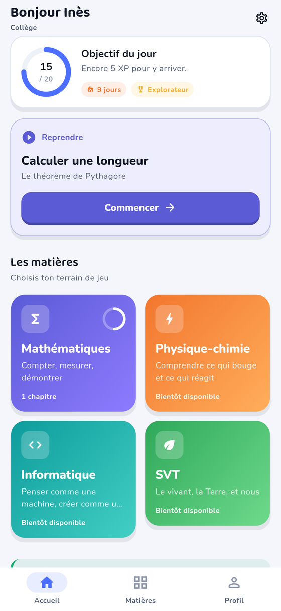
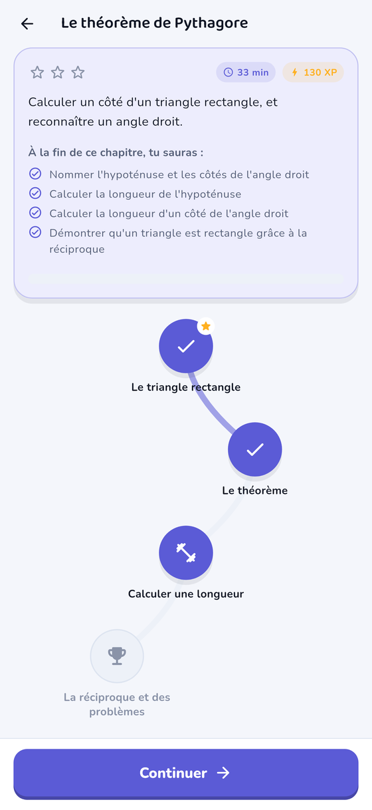
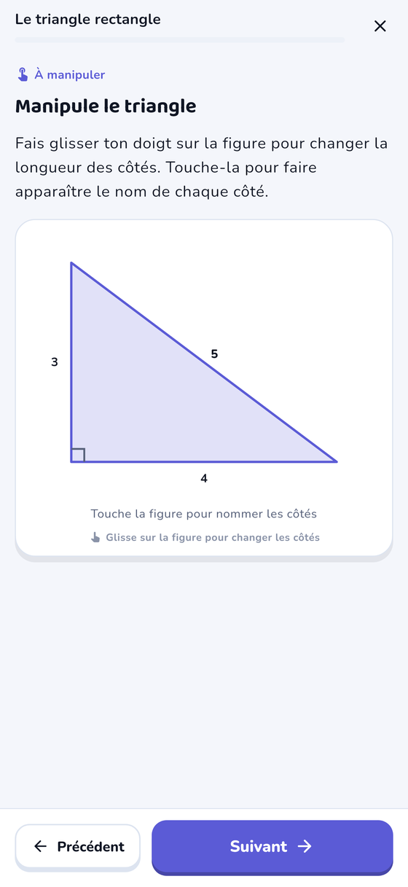
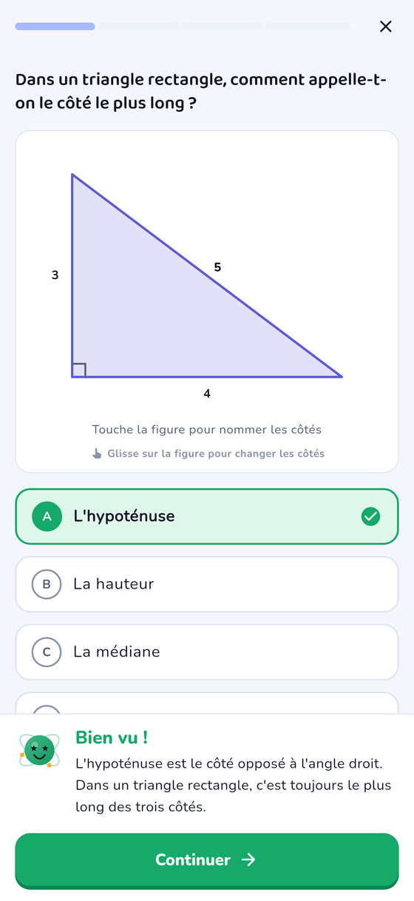

Eurêka
Apprendre les sciences en s'amusant,
du primaire à l'université.
Quatre matières, quatre niveaux
Mathématiques
Compter, mesurer, démontrer.
Physique-chimie
Comprendre ce qui bouge et ce qui réagit.
Informatique
Penser comme une machine, créer comme un humain.
SVT
Le vivant, la Terre, et nous.
Chaque matière est déclinée pour le primaire, le collège, le lycée et l'université. Le niveau choisi met du contenu en avant, il n'en interdit jamais aucun : un élève peut réviser une notion plus ancienne ou explorer la suite quand il veut.
À quoi ça ressemble
Ces images sont produites par l'application elle-même, à partir du vrai contenu — aucune maquette.




Comment ça marche
Des leçons, une idée par écran
Pas de long texte à faire défiler. Chaque notion tient sur une carte, avec des figures qu'on manipule au doigt : un triangle qu'on étire, un angle qu'on fait varier, et la règle qui se vérifie sous ses yeux.
Des exercices qui expliquent
Sept types d'exercices : choix, vrai-faux, calcul, texte à trous, remise en ordre, associations. Après chaque réponse, l'explication s'affiche — même quand la réponse est juste. Une erreur donne droit à un second essai avant la solution.
Une progression qui encourage
Points d'expérience, rangs, séries de jours et étoiles de maîtrise. Se tromper rapporte quand même des points : on valorise la persévérance, on ne la punit pas. Aucune vie à perdre, aucune attente, aucun contenu verrouillé.
Pourquoi c'est gratuit
Eurêka n'affiche aucune publicité, ne propose aucun achat intégré et ne collecte aucune donnée. Il n'y a rien à vendre, donc rien à financer : toute la progression reste sur l'appareil, et l'application fonctionne entièrement sans connexion — dans le métro comme dans une salle de classe sans réseau.